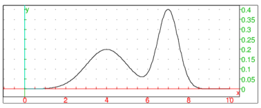

8.4.22 Kernel density estimation : kernel_density, kde
kernel_density (alias : kde) accepts a list of samples L=[X1,X2,…,Xn] and optionally a sequence of options. It performs kernel density estimation1 (KDE), optionally restricted to an interval [a,b], to obtain an estimate f of the (unknown) probability density function f from which the samples are drawn, defined by :
|
f(x)= | | | | K | ⎛
⎜
⎜
⎝ | | ⎞
⎟
⎟
⎠ | ,
(1) |
where K is the Gaussian kernel K(u)=1/√2 π exp(−1/2 u2) and h is the positive real parameter called the bandwidth.
The supported options are listed below.
-
output=<type> or Output=<type> : specifies the form of the return value f, where <type> may be
-
exact : f is returned as the sum of Gaussian kernels, i.e. as the right side of (1), which is usable only when the number of samples is relatively small (up to few hundreds),
- piecewise : f is returned as a piecewise expression obtained by the spline interpolation of the specified degree (by default, the interpolation is linear) on the interval [a,b] segmented to the specified number of bins,
- list (the default) : f is returned in discrete form, as a list of values f(a+k b−a/M−1) for k=0,1,…,M, where M is the number of bins.
- bandwidth=<value> : specifies the bandwidth. <value> may be
-
a positive real number h,
- select (the default) : bandwidth is selected using a direct plug-in method,
- gauss or normal or normald : the Silverman’s rule of thumb is used for selecting bandwidth (this method is fast but the results are close to optimal ones only when f is approximately normal).
- bins=<posint> (by default 100) : the number of bins for simplifying the input data. Only the number if samples in each bin is stored. Bins represent the elements of an equidistant segmentation of the interval S on which KDE is performed. This allows evaluating kernel summations using convolution when output is set to piecewise or list, which significantly lowers the computational burden for large values of n (say, few hundreds or more). If output is set to exact, this option is ignored.
- [range=]a..b or range=[a,b] or x=a..b : the interval [a,b] on which KDE is performed. If an identifier x is specified, it is used as the variable of the output. If the range endpoints are not specified, they are set to a=min1≤ i≤ n Xi−3 h and b=max1≤ i≤ nXi+3 h (unless output is set to exact, in which case this option is ignored).
- interp=<posint> (by default 1) : the degree of the spline interpolation, ignored unless output is set to piecewise.
- spline=<posint> : sets option to piecewise and interp to <posint>.
- eval=x0 : only the value f(x0) is returned (this cannot be used with output set to list).
- an unassigned identifier x (by default x) : the variable of the output.
- exact : the same as output=exact.
- piecewise : the same as output=piecewise.
Examples.
Input :
kernel_density([1,2,3,2],bandwidth=1/4,exact)
Output :
0.4*(exp(-8*(x-3)^2)+2*exp(-8*(x-2)^2)+exp(-8*(x-1)^2))
Input :
f:=unapply(normald(4,1,x)/2+normald(7,1/2,x)/2,x); plot(f(x),x=0..10)
Output :

Input :
X:=randvar(f,range=0..10,1000):; S:=sample(X,1000):; F:=kernel_density(S,piecewise):; plot([F,f(x)],x=0..10, display=[line_width_2+blue,line_width_1+black])
Output :
Input :
kernel_density(S,bins=50,spline=3,eval=4.75)
Output :
0.14655478136
Input :
time(kernel_density(sample(X,1e5),piecewise))
Output :
"Done",[0.17,0.1653323]
Input :
S:=sample(X,5000):; sqrt(int((f(x)-kde(S,piecewise))^,x=0..10))
Output :
0.0269841239243
Input :
S:=sample(X,25000):; sqrt(int((f(x)-kde(S,bins=150,piecewise))^2,x=0..10))
Output :
0.0144212781377